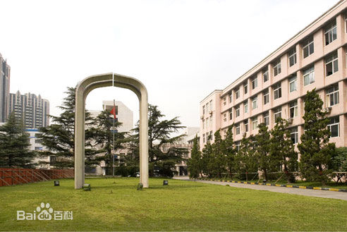

Skye
上海对外经贸大学
上海对外经贸大学（Shanghai University of International Business and Economics），简称上贸大，位于中国的经济、金融中心上海，是一所以经济学、管理学为主，兼有文学、法学、理学等学科的行业特色型重点大学，是“2011计划”[1] 、“卓越法律人才教育培养计划”[2] 、“卓越新闻传播人才教育培养计划”[3] 入选院校，为中国政府奖学金来华留学生接收院校、“中国-中东欧国家高校联合会”创始成员[4] 、"中国自由贸易试验区协同创新中心"核心单位[1] ，被誉为“国际商务精英的摇篮”。 学校是新中国创办的第一批高等财经院校之一，其前身为原上海对外贸易干部学校、上海外国语学院外贸外语系、上海海关学校等院校合并组建成立的上海对外贸易学院，于1962年并入上海外国语大学；1964年再次筹建；1965年上海海关学院整体并入；1972年撤销建制；1980年5月，经国务院批准，学校第二次复校；1994年7月学校由中华人民共和国对外经济贸易部直属划转为上海市人民政府直辖。2013年4月，经教育部批准，学校更名为上海对外经贸大学。 上海对外经贸大学在多边贸易体制研究领域具有一定国际影响力，是世界贸易组织（WTO）首批12所教席院校之一（中国唯一）[5] 、世界知识产权组织仲裁员单位、联合国亚洲及太平洋经济社会委员会贸易研究与培训网络重要分支、国际贸易与可持续发展中心合作伙伴，同时也是联合国贸易和发展会议虚拟学院核心成员[6] 。学校在2016年全国大学毕业生薪酬排行榜中位列第11位，中国大学录取分数总排名48名。

古北校区
古北校区有电化教育馆，包括演播室、语言实验室、多媒体计算机教室、闭路电视系统和卫星地面接收系统；有与上海市教育委员会共同投资建设的仿真模拟的经贸类文科实习基地--上海高校国际商务实习中心；还有专家楼、留学生楼、体育馆、室内健身房，以及上海对外经贸大学学位后培训基地（SUIBE Professional Development Center)。